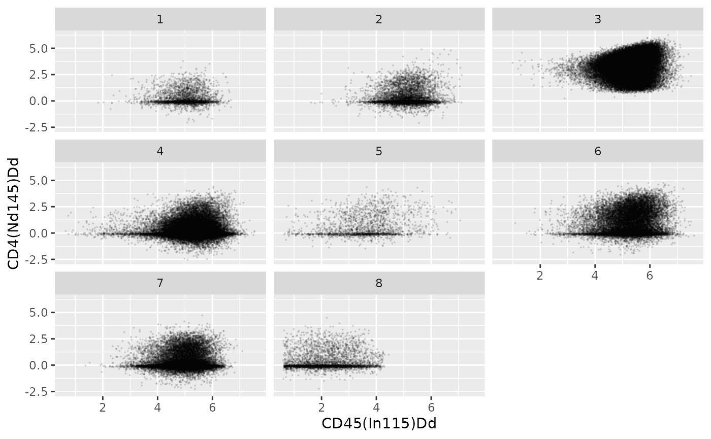

tidyFlowCore
Timothy Keyes
Stanford University School of Medicinetkeyes@stanford.edu
25 March 2024
Source:vignettes/tidyFlowCore.Rmd
tidyFlowCore.RmdBasics
Installing tidyFlowCore
R is an open-source statistical environment which can be
easily modified to enhance its functionality via packages. tidyFlowCore
is an R package available via Bioconductor, an open-source
repository for R packages related to biostatistics and biocomputing.
R can be installed on any operating system from CRAN after which you can install
tidyFlowCore
by using the following commands in your R session:
if (!requireNamespace("BiocManager", quietly = TRUE)) {
install.packages("BiocManager")
}
BiocManager::install("tidyFlowCore")
## Check that you have a valid Bioconductor installation
BiocManager::valid()Preliminaries
tidyFlowCore
adopts the so-called “tidy” functional programming paradigm developed by
Wickham et al. in the tidyverse ecosystem of R packages
(Wickham, François, Henry, Müller, and Vaughan, 2023). For information
about the tidyverse ecosytem broadly, feel free to
reference the (free) R for Data
Science book, the tidyverse
website, or this
paper describing the larger tidyomics project.
tidyFlowCore
integrates the flowCore Bioconductor package’s data
analysis capabilities with those of the tidyverse. If
you’re relatively unfamiliar with the Bioconductor project, you might be
interested in this
blog post.
Asking for help
Learning to use R and Bioconductor can be
challenging, so it’s important to know where to get help. The main place
to ask questions about tidyFlowCore is the Bioconductor support site.
Use the tidyFlowCore tag there and look at previous
posts.
You can also ask questions on GitHub or Twitter. But remember, if you’re asking for help, follow the posting guidelines. Make sure to include a simple example that reproduces your issue (a “reprex”) and your session info to help developers understand and solve your problem.
Citing tidyFlowCore
If you use tidyFlowCore for your research, please use the following citation.
citation("tidyFlowCore")
#> Warning in person1(given = given[[i]], family = family[[i]], middle =
#> middle[[i]], : It is recommended to use 'given' instead of 'middle'.
#> To cite package 'tidyFlowCore' in publications use:
#>
#> Keyes TJ (2024). _tidyFlowCore: Bringing flowCore to the tidyverse_.
#> doi:10.18129/B9.bioc.tidyFlowCore
#> <https://doi.org/10.18129/B9.bioc.tidyFlowCore>,
#> https://github.com/keyes-timothy/tidyflowCore/tidyFlowCore - R
#> package version 0.99.1,
#> <http://www.bioconductor.org/packages/tidyFlowCore>.
#>
#> A BibTeX entry for LaTeX users is
#>
#> @Manual{,
#> title = {tidyFlowCore: Bringing flowCore to the tidyverse},
#> author = {Timothy J Keyes},
#> year = {2024},
#> url = {http://www.bioconductor.org/packages/tidyFlowCore},
#> note = {https://github.com/keyes-timothy/tidyflowCore/tidyFlowCore - R package version 0.99.1},
#> doi = {10.18129/B9.bioc.tidyFlowCore},
#> }
tidyFlowCore quick start
tidyFlowCore allows you to treat flowCore
data structures like tidy data.frames or
tibbles. It does so by implementing dplyr, tidyr, and
ggplot2 verbs that can be deployed directly on the
flowFrame and flowSet S4 classes.
In this section, we give a brief example of how
tidyFlowCore can enable a data analysis pipeline to use all
the useful functions of the flowCore package and many of
the functions of the dplyr, tidyr, and
ggplot2 packages.
Load required packages
library(tidyFlowCore)
library(flowCore)Read data
For our example here, we download some publicly available mass
cytometry (CyTOF) data downloadable through the (Weber, M, Soneson, and
Charlotte, 2019) package. These data are made available as a
flowCore::flowSet S4 object, Bioconductor’s
standard data structure for cytometry data.
# read data from the HDCytoData package
bcr_flowset <- HDCytoData::Bodenmiller_BCR_XL_flowSet()
#> see ?HDCytoData and browseVignettes('HDCytoData') for documentation
#> downloading 1 resources
#> retrieving 1 resource
#> loading from cache
#> Warning in updateObjectFromSlots(object, ..., verbose = verbose): dropping
#> slot(s) 'colnames' from object = 'flowSet'To read more about this dataset, run the following command:
?HDCytoData::Bodenmiller_BCR_XL_flowSetData transformation
The flowCore package natively supports multiple types of
data preprocessing and transformations for cytometry data through the
use of its tranform class.
For example, if we want to apply the standard arcsinh transformation often used for CyTOF data to our current dataset, we could use the following code:
asinh_transformation <- flowCore::arcsinhTransform(a = 0, b = 1/5, c = 0)
transformation_list <-
flowCore::transformList(
colnames(bcr_flowset),
asinh_transformation
)
transformed_bcr_flowset <- flowCore::transform(bcr_flowset, transformation_list)Alternatively, we can also use the tidyverse’s
functional programming paradigm to perform the same transformation. For
this, we use the mutate-across framework via
tidyFlowCore:
Cell type counting
Suppose we’re interested in counting the number of cells that belong
to each cell type (encoded in the population_id column of
bcr_flowset) in our dataset. Using standard
flowCore functions, we could perform this calculation in a
few steps:
# extract all expression matrices from our flowSet
combined_matrix <- flowCore::fsApply(bcr_flowset, exprs)
# take out the concatenated population_id column
combined_population_id <- combined_matrix[, 'population_id']
# perform the calculation
table(combined_population_id)
#> combined_population_id
#> 1 2 3 4 5 6 7 8
#> 3265 6651 62890 51150 1980 18436 24518 3901tidyFlowCore allows us to perform the same operation
simply using the dplyr package’s count
function:
bcr_flowset |>
dplyr::count(population_id)
#> # A tibble: 8 × 2
#> population_id n
#> <dbl> <int>
#> 1 1 3265
#> 2 2 6651
#> 3 3 62890
#> 4 4 51150
#> 5 5 1980
#> 6 6 18436
#> 7 7 24518
#> 8 8 3901And tidyFlowCore also makes it easy to perform the
counting broken down by other variables in our metadata:
bcr_flowset |>
# use the .tidyFlowCore_identifier pronoun to access the name of
# each experiment in the flowSet
dplyr::count(.tidyFlowCore_identifier, population_id)
#> # A tibble: 128 × 3
#> .tidyFlowCore_identifier population_id n
#> <chr> <dbl> <int>
#> 1 PBMC8_30min_patient1_BCR-XL.fcs 1 31
#> 2 PBMC8_30min_patient1_BCR-XL.fcs 2 112
#> 3 PBMC8_30min_patient1_BCR-XL.fcs 3 761
#> 4 PBMC8_30min_patient1_BCR-XL.fcs 4 1307
#> 5 PBMC8_30min_patient1_BCR-XL.fcs 5 5
#> 6 PBMC8_30min_patient1_BCR-XL.fcs 6 127
#> 7 PBMC8_30min_patient1_BCR-XL.fcs 7 444
#> 8 PBMC8_30min_patient1_BCR-XL.fcs 8 51
#> 9 PBMC8_30min_patient1_Reference.fcs 1 52
#> 10 PBMC8_30min_patient1_Reference.fcs 2 132
#> # ℹ 118 more rowsNesting and unnesting
flowFrame and flowSet data objects have a
clear relationship with one another in the flowCore API -
essentially nested flowFrames. In other words,
flowSets are made up of multiple
flowFrames!
tidyFlowCore provides a useful API for converting
between flowSet and flowFrame data structures
at various degrees of nesting using the
group/nest and
ungroup/unnest verbs. Note that in the dplyr
and tidyr APIs, group/nest and
ungroup/unnest are not
synonyms (grouped data.frames are different from nested
data.frames). However, because of how
flowFrames and flowSets are structured,
tidyFlowCore’s group/nest and
ungroup/unnest functions have identical
behavior, respectively.
# unnesting a flowSet results in a flowFrame with an additional column,
# 'tidyFlowCore_name` that identifies cells based on which experiment in the
# original flowSet they come from
bcr_flowset |>
dplyr::ungroup()
#> flowFrame object 'file1a8520120734'
#> with 172791 cells and 40 observables:
#> name desc range minRange maxRange
#> $P1 Time Time 2399633 0.0000 2399632
#> $P2 Cell_length Cell_length 69 0.0000 68
#> $P3 CD3(110:114)Dd CD3(110:114)Dd 9383 -61.6796 9382
#> $P4 CD45(In115)Dd CD45(In115)Dd 5035 0.0000 5034
#> $P5 BC1(La139)Dd BC1(La139)Dd 14306 -100.8797 14305
#> ... ... ... ... ... ...
#> $P36 group_id group_id 3 0 2
#> $P37 patient_id patient_id 9 0 8
#> $P38 sample_id sample_id 17 0 16
#> $P39 population_id population_id 9 0 8
#> $P40 .tidyFlowCore_name .tidyFlowCore_name 17 0 16
#> 297 keywords are stored in the 'description' slot
# flowSets can be unnested and renested for various analyses
bcr_flowset |>
dplyr::ungroup() |>
# group_by cell type
dplyr::group_by(population_id) |>
# calculate the mean HLA-DR expression of each cell population
dplyr::summarize(mean_expression = mean(`HLA-DR(Yb174)Dd`)) |>
dplyr::select(population_id, mean_expression)
#> # A tibble: 8 × 2
#> population_id mean_expression
#> <dbl> <dbl>
#> 1 3 3.67
#> 2 7 3.33
#> 3 4 4.33
#> 4 2 87.1
#> 5 6 88.2
#> 6 8 3.12
#> 7 1 51.4
#> 8 5 18.0Plotting
tidyFlowCore also provides a direct interface between
ggplot2 and flowFrame or flowSet
data objects. For example…
library(ggplot2)
bcr_flowset |>
dplyr::mutate(across(-ends_with("_id"), \(.x) asinh(.x / 5))) |>
ggplot(aes(x = `CD45(In115)Dd`, y = `CD4(Nd145)Dd`)) +
geom_point(size = 0.1, alpha = 0.1) +
facet_wrap(facets = vars(population_id))
Reproducibility
The tidyFlowCore package (Keyes, 2024) was made possible thanks to the following:
- R (R Core Team, 2024)
- BiocStyle (Oleś, 2023)
- knitr (Xie, 2023)
- RefManageR (McLean, 2017)
- rmarkdown (Allaire, Xie, Dervieux, McPherson, Luraschi, Ushey, Atkins, Wickham, Cheng, Chang, and Iannone, 2024)
- sessioninfo (Wickham, Chang, Flight, Müller, and Hester, 2021)
- testthat (Wickham, 2011)
- tidyverse (Wickham, François, Henry et al., 2023)
This package was developed using biocthis.
Code for creating the vignette
## Create the vignette
library("rmarkdown")
system.time(render("tidyFlowCore.Rmd", "BiocStyle::html_document"))
## Extract the R code
library("knitr")
knit("tidyFlowCore.Rmd", tangle = TRUE)Date the vignette was generated.
#> [1] "2024-03-25 03:30:56 UTC"Wallclock time spent generating the vignette.
#> Time difference of 24.882 secsR session information.
#> ─ Session info ───────────────────────────────────────────────────────────────────────────────────────────────────────
#> setting value
#> version R version 4.3.3 (2024-02-29)
#> os Ubuntu 22.04.4 LTS
#> system x86_64, linux-gnu
#> ui X11
#> language en
#> collate C.UTF-8
#> ctype C.UTF-8
#> tz UTC
#> date 2024-03-25
#> pandoc 3.1.11 @ /opt/hostedtoolcache/pandoc/3.1.11/x64/ (via rmarkdown)
#>
#> ─ Packages ───────────────────────────────────────────────────────────────────────────────────────────────────────────
#> package * version date (UTC) lib source
#> abind 1.4-5 2016-07-21 [1] RSPM
#> AnnotationDbi 1.64.1 2023-11-03 [1] Bioconductor
#> AnnotationHub * 3.10.0 2023-10-24 [1] Bioconductor
#> backports 1.4.1 2021-12-13 [1] RSPM
#> bibtex 0.5.1 2023-01-26 [1] RSPM
#> Biobase * 2.62.0 2023-10-24 [1] Bioconductor
#> BiocFileCache * 2.10.1 2023-10-26 [1] Bioconductor
#> BiocGenerics * 0.48.1 2023-11-01 [1] Bioconductor
#> BiocManager 1.30.22 2023-08-08 [1] RSPM
#> BiocStyle * 2.30.0 2023-10-24 [1] Bioconductor
#> BiocVersion 3.18.1 2023-11-15 [1] Bioconductor
#> Biostrings 2.70.3 2024-03-13 [1] Bioconduc~
#> bit 4.0.5 2022-11-15 [1] RSPM
#> bit64 4.0.5 2020-08-30 [1] RSPM
#> bitops 1.0-7 2021-04-24 [1] RSPM
#> blob 1.2.4 2023-03-17 [1] RSPM
#> bookdown 0.38 2024-03-04 [1] RSPM
#> bslib 0.6.2 2024-03-22 [1] RSPM
#> cachem 1.0.8 2023-05-01 [1] RSPM
#> cli 3.6.2 2023-12-11 [1] RSPM
#> colorspace 2.1-0 2023-01-23 [1] RSPM
#> crayon 1.5.2 2022-09-29 [1] RSPM
#> curl 5.2.1 2024-03-01 [1] RSPM
#> cytolib 2.14.1 2024-01-18 [1] Bioconduc~
#> DBI 1.2.2 2024-02-16 [1] RSPM
#> dbplyr * 2.5.0 2024-03-19 [1] RSPM
#> DelayedArray 0.28.0 2023-10-24 [1] Bioconductor
#> desc 1.4.3 2023-12-10 [1] RSPM
#> digest 0.6.35 2024-03-11 [1] RSPM
#> dplyr 1.1.4 2023-11-17 [1] RSPM
#> ellipsis 0.3.2 2021-04-29 [1] RSPM
#> evaluate 0.23 2023-11-01 [1] RSPM
#> ExperimentHub * 2.10.0 2023-10-24 [1] Bioconductor
#> fansi 1.0.6 2023-12-08 [1] RSPM
#> farver 2.1.1 2022-07-06 [1] RSPM
#> fastmap 1.1.1 2023-02-24 [1] RSPM
#> filelock 1.0.3 2023-12-11 [1] RSPM
#> flowCore * 2.14.2 2024-03-18 [1] Bioconduc~
#> fs 1.6.3 2023-07-20 [1] RSPM
#> generics 0.1.3 2022-07-05 [1] RSPM
#> GenomeInfoDb * 1.38.8 2024-03-15 [1] Bioconduc~
#> GenomeInfoDbData 1.2.11 2024-03-25 [1] Bioconductor
#> GenomicRanges * 1.54.1 2023-10-29 [1] Bioconductor
#> ggplot2 * 3.5.0 2024-02-23 [1] RSPM
#> glue 1.7.0 2024-01-09 [1] RSPM
#> gtable 0.3.4 2023-08-21 [1] RSPM
#> HDCytoData * 1.22.1 2024-03-19 [1] Bioconduc~
#> highr 0.10 2022-12-22 [1] RSPM
#> htmltools 0.5.7 2023-11-03 [1] RSPM
#> httpuv 1.6.14 2024-01-26 [1] RSPM
#> httr 1.4.7 2023-08-15 [1] RSPM
#> interactiveDisplayBase 1.40.0 2023-10-24 [1] Bioconductor
#> IRanges * 2.36.0 2023-10-24 [1] Bioconductor
#> jquerylib 0.1.4 2021-04-26 [1] RSPM
#> jsonlite 1.8.8 2023-12-04 [1] RSPM
#> KEGGREST 1.42.0 2023-10-24 [1] Bioconductor
#> knitr 1.45 2023-10-30 [1] RSPM
#> labeling 0.4.3 2023-08-29 [1] RSPM
#> later 1.3.2 2023-12-06 [1] RSPM
#> lattice 0.22-5 2023-10-24 [3] CRAN (R 4.3.3)
#> lifecycle 1.0.4 2023-11-07 [1] RSPM
#> lubridate 1.9.3 2023-09-27 [1] RSPM
#> magrittr 2.0.3 2022-03-30 [1] RSPM
#> Matrix 1.6-5 2024-01-11 [3] CRAN (R 4.3.3)
#> MatrixGenerics * 1.14.0 2023-10-24 [1] Bioconductor
#> matrixStats * 1.2.0 2023-12-11 [1] RSPM
#> memoise 2.0.1 2021-11-26 [1] RSPM
#> mime 0.12 2021-09-28 [1] RSPM
#> munsell 0.5.0 2018-06-12 [1] RSPM
#> pillar 1.9.0 2023-03-22 [1] RSPM
#> pkgconfig 2.0.3 2019-09-22 [1] RSPM
#> pkgdown 2.0.7 2022-12-14 [1] any (@2.0.7)
#> plyr 1.8.9 2023-10-02 [1] RSPM
#> png 0.1-8 2022-11-29 [1] RSPM
#> promises 1.2.1 2023-08-10 [1] RSPM
#> purrr 1.0.2 2023-08-10 [1] RSPM
#> R6 2.5.1 2021-08-19 [1] RSPM
#> ragg 1.3.0 2024-03-13 [1] RSPM
#> rappdirs 0.3.3 2021-01-31 [1] RSPM
#> Rcpp 1.0.12 2024-01-09 [1] RSPM
#> RCurl 1.98-1.14 2024-01-09 [1] RSPM
#> RefManageR * 1.4.0 2022-09-30 [1] RSPM
#> rlang 1.1.3 2024-01-10 [1] RSPM
#> rmarkdown 2.26 2024-03-05 [1] RSPM
#> RProtoBufLib 2.14.1 2024-03-18 [1] Bioconduc~
#> RSQLite 2.3.5 2024-01-21 [1] RSPM
#> S4Arrays 1.2.1 2024-03-04 [1] Bioconduc~
#> S4Vectors * 0.40.2 2023-11-23 [1] Bioconduc~
#> sass 0.4.9 2024-03-15 [1] RSPM
#> scales 1.3.0 2023-11-28 [1] RSPM
#> sessioninfo * 1.2.2 2021-12-06 [1] RSPM
#> shiny 1.8.0 2023-11-17 [1] RSPM
#> SparseArray 1.2.4 2024-02-11 [1] Bioconduc~
#> stringi 1.8.3 2023-12-11 [1] RSPM
#> stringr 1.5.1 2023-11-14 [1] RSPM
#> SummarizedExperiment * 1.32.0 2023-10-24 [1] Bioconductor
#> systemfonts 1.0.6 2024-03-07 [1] RSPM
#> textshaping 0.3.7 2023-10-09 [1] RSPM
#> tibble 3.2.1 2023-03-20 [1] RSPM
#> tidyFlowCore * 0.99.1 2024-03-25 [1] local
#> tidyr 1.3.1 2024-01-24 [1] RSPM
#> tidyselect 1.2.1 2024-03-11 [1] RSPM
#> timechange 0.3.0 2024-01-18 [1] RSPM
#> utf8 1.2.4 2023-10-22 [1] RSPM
#> vctrs 0.6.5 2023-12-01 [1] RSPM
#> withr 3.0.0 2024-01-16 [1] RSPM
#> xfun 0.42 2024-02-08 [1] RSPM
#> xml2 1.3.6 2023-12-04 [1] RSPM
#> xtable 1.8-4 2019-04-21 [1] RSPM
#> XVector 0.42.0 2023-10-24 [1] Bioconductor
#> yaml 2.3.8 2023-12-11 [1] RSPM
#> zlibbioc 1.48.2 2024-03-13 [1] Bioconduc~
#>
#> [1] /home/runner/work/_temp/Library
#> [2] /opt/R/4.3.3/lib/R/site-library
#> [3] /opt/R/4.3.3/lib/R/library
#>
#> ──────────────────────────────────────────────────────────────────────────────────────────────────────────────────────Bibliography
This vignette was generated using BiocStyle (Oleś, 2023) with knitr (Xie, 2023) and rmarkdown (Allaire, Xie, Dervieux et al., 2024) running behind the scenes.
Citations made with RefManageR (McLean, 2017).
[1] J. Allaire, Y. Xie, C. Dervieux, et al. rmarkdown: Dynamic Documents for R. R package version 2.26. 2024. URL: https://github.com/rstudio/rmarkdown.
[2] T. J. Keyes. tidyFlowCore: Bringing flowCore to the tidyverse. https://github.com/keyes-timothy/tidyflowCore/tidyFlowCore - R package version 0.99.1. 2024. DOI: 10.18129/B9.bioc.tidyFlowCore. URL: http://www.bioconductor.org/packages/tidyFlowCore.
[3] M. W. McLean. “RefManageR: Import and Manage BibTeX and BibLaTeX References in R”. In: The Journal of Open Source Software (2017). DOI: 10.21105/joss.00338.
[4] A. Oleś. BiocStyle: Standard styles for vignettes and other Bioconductor documents. R package version 2.30.0. 2023. DOI: 10.18129/B9.bioc.BiocStyle. URL: https://bioconductor.org/packages/BiocStyle.
[5] R Core Team. R: A Language and Environment for Statistical Computing. R Foundation for Statistical Computing. Vienna, Austria, 2024. URL: https://www.R-project.org/.
[6] Weber, L. M, Soneson, et al. “HDCytoData: Collection of high-dimensional cytometry benchmark datasets in Bioconductor object formats”. In: F1000Research 8.v2 (2019), p. 1459.
[7] H. Wickham. “testthat: Get Started with Testing”. In: The R Journal 3 (2011), pp. 5–10. URL: https://journal.r-project.org/archive/2011-1/RJournal_2011-1_Wickham.pdf.
[8] H. Wickham, W. Chang, R. Flight, et al. sessioninfo: R Session Information. R package version 1.2.2, https://r-lib.github.io/sessioninfo/. 2021. URL: https://github.com/r-lib/sessioninfo#readme.
[9] H. Wickham, R. François, L. Henry, et al. dplyr: A Grammar of Data Manipulation. R package version 1.1.4, https://github.com/tidyverse/dplyr. 2023. URL: https://dplyr.tidyverse.org.
[10] Y. Xie. knitr: A General-Purpose Package for Dynamic Report Generation in R. R package version 1.45. 2023. URL: https://yihui.org/knitr/.